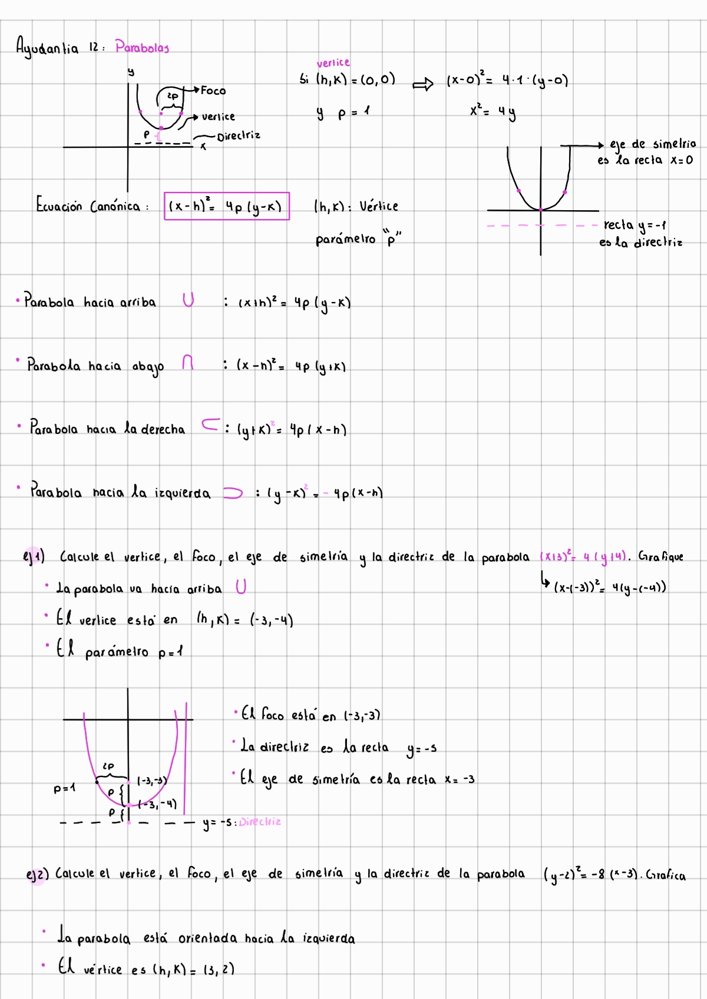
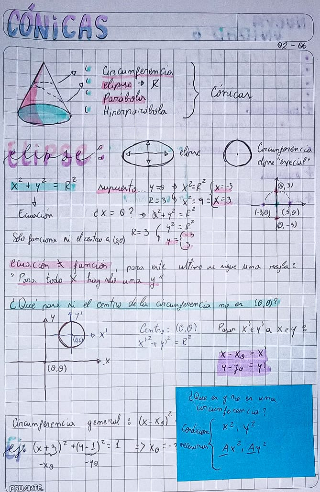
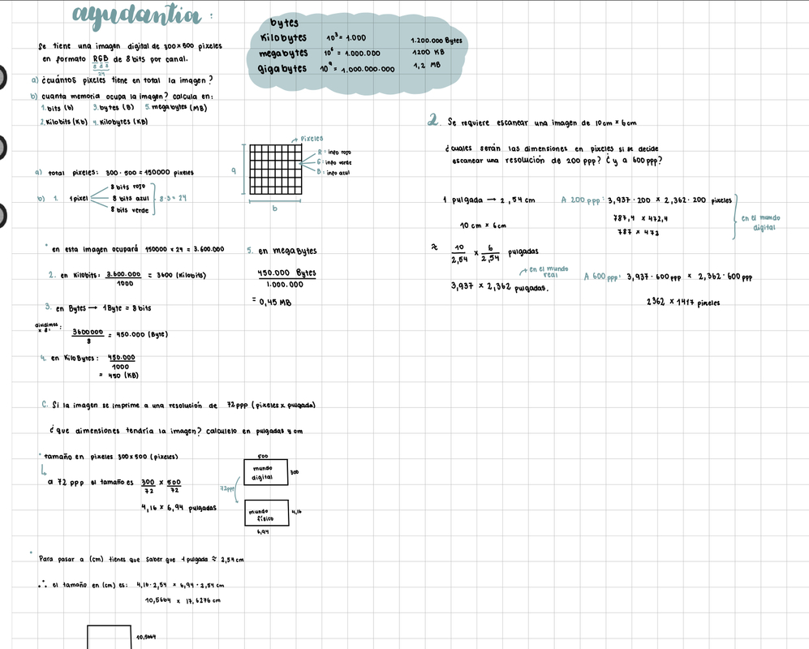

universidad de chileuniversidad de chile
facultad de arquitectura y urbanismofaculty of architecture and urbanism
escuela de diseñodesign school
segundo semestre 2023 (marzo - julio)first semester 2023 (march - july)
curso teórico de primer año, para sentar las bases del pensamiento matemático a estudiantes de diseño, incluyendo álgebra, geometría, trigonometría y lógica.theoretical course for first year students, where we review the foundations of mathematical thought applied to design, including algebra, geometry, trigonometry, and logic.
aprenderemos a modelar problemas de forma paramétrica, y tomando en cuenta la matemática detrás de la computación y la percepción humana de la realidad física.we will learn to model problems in a parametric way, and taking into account the math behind computation and human perception of the physical reality.
el trabajo se hace de forma pública y compartida, con les estudiantes compartiendo sus apuntes y realizando trabajos de investigación aplicada.all the work will be done in public, collaboratively, with the students sharing their notes and applied research.
aarón montoya-moraga: profesoreprofessor
ignacio passalacqua: ayudanteteaching assistant


